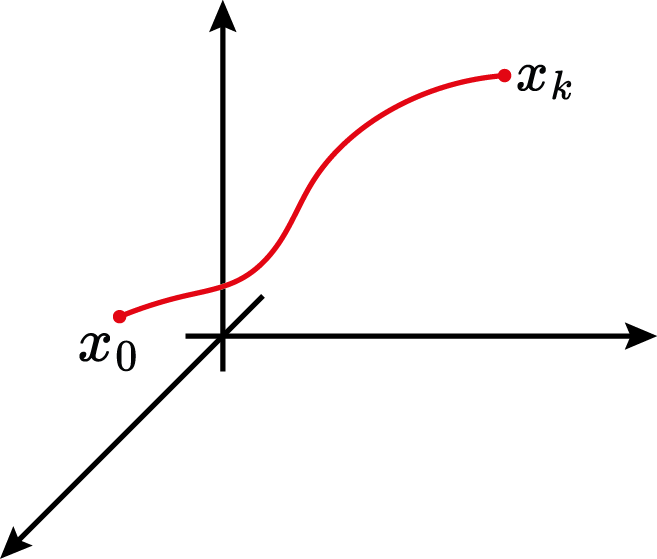
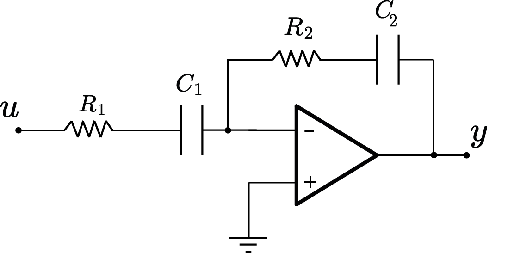

Controllability and Observability
Prof. Dr. Marcos Rogério Fernandes
March 26, 2025
Objectives:
The objectives of this class are:
- Understand the properties of controllability and observability;
- Understand the relation of stabilizability and detectability;
- Show examples
State-Space Model in Discrete Time
$$ \begin{aligned} x_{k+1}&=A_dx_k+B_du_k\\ y_k&=Cx_k+Du_k \end{aligned} $$
State-Space Model in Discrete Time

Solution of the State Equation in Discrete Time
$$ \begin{aligned} x_k=A_d^kx_0+\sum_{j=0}^{k-1}A_d^{k-j-1}B_d u_j, \quad k=1,2,3,\ldots \end{aligned} $$
Solution of the State Equation in Discrete Time
Output: $$ \begin{aligned} y_k=CA_d^kx_0+C\sum_{j=0}^{k-1}A_d^{k-1-j}B_d u_j+Du_k, \\k=1,2,3,\ldots \end{aligned} $$
Controllability
Is it possible to drive the system to any desired state in finite time?
Controllability
Is it possible to drive the system to any desired state in finite time?
$$ \text{There exists a sequence of control actions } u_0,u_1,\ldots,u_{k-1} \\ \text{ such that: } \\x_k=A_d^kx_0+\sum_{j=0}^{k-1}A_d^{k-1-j}Bu_j $$Controllability
Controllability
Controllability
$$ \begin{aligned} x_k-A^kx_0 =\begin{bmatrix} B & AB & \cdots & A^{k-1}B \end{bmatrix}\begin{bmatrix} u_{k-1}\\ u_{k-2}\\ \vdots\\ u_{0} \end{bmatrix} \end{aligned} $$
Controllability
$$ \begin{aligned} x_k-A^kx_0 =\underbrace{\begin{bmatrix} B & AB & \cdots & A^{k-1}B \end{bmatrix}}_{\mathcal{C}}\begin{bmatrix} u_{k-1}\\ u_{k-2}\\ \vdots\\ u_{0} \end{bmatrix} \end{aligned} $$
Controllability
$$ \begin{aligned} x_k-A^kx_0 =\mathcal{C}\begin{bmatrix} u_{k-1}\\ u_{k-2}\\ \vdots\\ u_{0} \end{bmatrix} \end{aligned} $$
Controllability
Controllability
Controllability
$$ \Delta x\in \mathcal{Range}\{\mathcal{C}\} $$

Full Controllability
Therefore, if $\text{rank}(\mathcal{C})=n$ then there exists a sequence $\{u_j\}_{j=0}^{k-1}$ that drives the system from state $x_0$ to $x_k$.
Full Controllability
Lemma: The par $(A,B)$ for a discrete-time system is controllable if and only if the matrix $$ \mathcal{C}=\begin{bmatrix} B & AB & \cdots & A^{n-1}B \end{bmatrix}\in\mathbb{R}^{n\times mn} $$ has full rank.
Full Controllability
If $u_k\in\mathbb{R}$ (single-input) and $x_k\in\mathbb{R}^n$, then it is sufficient that there exists $u_0,u_1,\ldots,u_{n-1}$ control actions to drive the system to any state.
$$ \begin{aligned} \begin{bmatrix} u_{k-1}\\ u_{k-2}\\ \vdots\\ u_{0} \end{bmatrix}= \mathcal{C}^{-1}\Delta x \end{aligned} $$
Full Controllability
If $u_k\in\mathbb{R^m}$ (multiple-input), with $m\le n$, then it is sufficient that there exists $u_0,u_1,\ldots,u_{\lceil\frac{n}{m}\rceil-1}$ control actions to drive the system to any state.
$ \begin{bmatrix} u_0\\ u_1\\ u_2\\ \vdots \\ u_{\lceil\frac{n}{m}\rceil-1} \end{bmatrix}= \mathcal{C}^{\dagger}\Delta x $Full Controllability:example
$x_k\in\mathbb{R}^5$ and $u_k\in\mathbb{R}^2$
So, $n=5$ and $m=2$, then $$ \begin{bmatrix} u_0\\ u_1\\ u_2 \end{bmatrix}_{6\times 1}= \mathcal{C}^{\dagger} \Delta x_{n\times 1} $$Full Controllability: continuous-time
$$ \dot{x}=Ax+Bu $$
Is it possible to drive the system to any desired state in finite time?
Full Controllability: continuous-time
$$ \dot{x}=Ax+Bu $$
Is it possible to drive the system to any desired state in finite time?
$$ \text{There exists a of control law } u(t), \forall t \in[0,T] \\ \text{ such that: } \\x(T)=e^{AT}x_0+\int_0^T e^{A(T-t)}Bu(t)dt $$Full Controllability: continuous-time
Lemma: The par $(A,B)$ for a continuous-time system is controllable if and only if the matrix $$ \mathcal{C}=\begin{bmatrix} B & AB & \cdots & A^{n-1}B \end{bmatrix}\in\mathbb{R}^{n\times mn} $$ has full rank.
Full Controllability: continuous-time
Proof: Define a similarity transformation $T$ such that $TAT^{-1}=\tilde{A}$ and $TB=\tilde{B}$ is a controllable canonical form. Then, the controllability matrix of the pair $(\tilde{A},\tilde{B})$ is given by $$ \tilde{\mathcal{C}}=\begin{bmatrix} \tilde{B} & \tilde{A}\tilde{B} & \cdots & \tilde{A}^{n-1}\tilde{B} \end{bmatrix} $$ which implies $$ \tilde{\mathcal{C}}=T\mathcal{C} \Rightarrow T=\tilde{\mathcal{C}}\mathcal{C}^{-1} \square $$
Full Controllability: gramian
Assume that $x(0)=0$, then the state transition matrix is given by $$ x(t)=\int_0^t e^{A(t-\tau)}Bu(\tau)d\tau $$
Suppose that exists a control law given by$$ u(\tau)=B^\trp e^{A^\trp(t-\tau)}W_c^{-1}x(t) $$
Full Controllability: gramian
The matrix $W_c$ is defined as
$$ W_c=\int_0^t e^{A\eta}B B^\trp e^{A^\trp\eta}d\eta \in\mathbb{R}^{n\times n} $$
must be non-singular!Full Controllability: gramian
Thus, $$ W_c=\int_0^t z(\eta)^\trp z(\eta) d\eta\ge 0 $$ with
$$ z(\eta)=B^\trp e^{A^\trp \eta}v=0,\quad \eta \in [0,t] $$
Full Controllability: gramian
Full Controllability: gramian
$$ W_c=\int_0^t e^{A\eta}B B^\trp e^{A^\trp\eta}d\eta >0 $$
Putting it in another way, $$ W_c > 0 \Leftrightarrow \text{rank}(\mathcal{C})=n $$Observability
Is it possible to determine the initial condition of the system given a finite set of output measurements and the input signal?

Observability
$$ \begin{aligned} y_0&=Cx_0+Du_0\\ y_1&=Cx_1+Du_1=CAx_0+CBu_0+Du_1\\ \vdots \\ y_k&=CA^kx_0+CA^{k-1}Bu_0+\cdots+CBu_{k-1}+Du_k \end{aligned} $$
Observability
$$ \begin{aligned} y_0-Du_0&=Cx_0\\ y_1-CBu_0-Du_1&=CAx_0\\ \vdots \\ y_k-C\sum_{j=0}^{k-1}A^{k-1-j}Bu_j-Du_k&=CA^kx_0 \end{aligned} $$
Observability
$$ \begin{aligned} \begin{bmatrix} y_0-Du_0\\ y_1-CBu_0-Du_1\\ \vdots\\ y_k-C\sum_{j=0}^{k-1}A^{k-1-j}Bu_j-Du_k \end{bmatrix} &= \begin{bmatrix} Cx_0\\ CAx_0\\ \vdots \\ CA^kx_0 \end{bmatrix} \end{aligned} $$
Observability
$$ \begin{aligned} \begin{bmatrix} y_0-Du_0\\ y_1-CBu_0-Du_1\\ \vdots\\ y_k-C\sum_{j=0}^{k-1}A^{k-1-j}Bu_j-Du_k \end{bmatrix} &= \begin{bmatrix} C\\ CA\\ \vdots \\ CA^k \end{bmatrix}x_0 \end{aligned} $$
Observability
$$ \begin{aligned} \begin{bmatrix} y_0-Du_0\\ y_1-CBu_0-Du_1\\ \vdots\\ y_k-C\sum_{j=0}^{k-1}A^{k-1-j}Bu_j-Du_k \end{bmatrix} &= \underbrace{\begin{bmatrix} C\\ CA\\ \vdots \\ CA^k \end{bmatrix}}_{\mathcal{O}}x_0 \end{aligned} $$
Observability
Observability
Observability
$$ \Delta y\in \mathcal{Range}\{\mathcal{O}\} $$
Full Observability
Therefore, if $\text{rank}(\mathcal{O})=n$ then it is possible to reconstruct $x_0$ through the measurements $\{y_j\}_{j=0}^{k}$ and $\{u_j\}_{j=0}^{k}$.
Full Observability: continuous-time
Lemma: The par $(A,C)$ for a discrete-time system is observable if and only if the matrix $$ \mathcal{O}=\begin{bmatrix} C\\ CA\\ \vdots \\ CA^{n-1} \end{bmatrix}\in\mathbb{R}^{pn\times n} $$ has full rank.
Full Observability
If $y_k\in\mathbb{R}$ (single-output), then it is sufficient to have a set of measurements $y_0,y_1,\ldots,y_{n-1}$ to reconstruct $x_0$.
$$ \begin{aligned} x_0= \mathcal{O}^{-1}\Delta y \end{aligned} $$
Observability: continuous-time
Is it possible to determine the initial condition of the system given a finite interval of output measurements $y(t),\forall t\in[0,T]$ and the input signal $u(t),\forall t\in[0,T]$?
Full Observability: continuous-time
Lemma: The par $(A,C)$ for a continuous-time system is observable if and only if the matrix $$ \mathcal{O}=\begin{bmatrix} C\\ CA\\ \vdots \\ CA^{n-1} \end{bmatrix}\in\mathbb{R}^{pn\times n} $$ has full rank.
Full Observability: continuous-time
Proof: Define $$ x_0=W_o^{-1}\int_0^t e^{A\tau}C^\trp y(\tau)d\tau $$ such that $$ W_o=\int_0^t e^{A^\trp\tau}C^\trp C e^{A\tau}d\tau \in \mathbb{R}^{n\times n} $$ must be non-singular.
Full Observability: continuous-time
We need to test if $W_o$ is non-singular. Therefore, we need to show that $$ \forall v\neq 0 ,\quad v^\trp W_0 v >0 $$
Let's choose, in particular, $v=x_0\neq 0$, Thus $$ x_0^\trp W_o x_0=\int_0^t y^\trp(\tau)y(\tau)d\tau \ge 0 $$Full Observability: continuous-time
The only way to get $x_0^\trp W_ox_0=0$ is $y(t)=0,\forall t\in[0,T]$. Thus,
$$ y(t)=Ce^{At}x_0=0,\quad\forall t\in[0,T] $$
which holds for all successive derivatives at $t=0$.Full Observability: continuous-time
Accordingly, we get
$$ \underbrace{\begin{bmatrix} C\\ CA\\ \vdots \\ CA^{n-1} \end{bmatrix}}_{\mathcal{O}}x_0=0 $$
Full Observability: gramian
$$ W_o=\int_0^t e^{A^\trp\eta}C^\trp C e^{A\eta}d\eta >0 $$
Putting it in another way, $$ W_o> 0 \Leftrightarrow \text{rank}(\mathcal{O})=n $$Stabilizability
Definition: We say that the pair $(A,B)$ is stabilizable if for any $x(0)=x_0$, there exsits a control law $u(t)$ such that $$ \lim_{t\to\infty}x(t)=0 $$
Partially Controllable Systems
Stabilizability of Systems
If there exists a similarity transformation such that the dynamic system follows $$ \begin{bmatrix} \dot{x}^c \\ \dot{x}^{nc} \\ \end{bmatrix}= \underbrace{\begin{bmatrix} A_{11} & A_{12} \\ 0 & A_{22} \end{bmatrix}}_{TAT^{-1}}\begin{bmatrix} x^c \\ x^{nc} \\ \end{bmatrix}+\underbrace{\begin{bmatrix} B_c \\ 0 \end{bmatrix}}_{TB}u $$ then the pair $(A,B)$ is stabilizable if and only if $$\text{real}(\lambda\{A_{22}\})<0 $$
Stabilizability of Systems
Hautus Lemma: A pair $(A,B)$ is stabilizable if and only if $$ \text{rank}(\begin{bmatrix}\lambda I-A & B\end{bmatrix})=n $$ for all $\lambda\in\mathbb{C}$ such that $\text{real}(\lambda)\ge 0$.
Stabilizability of Systems
Lemma: A pair $(A,B)$ is stabilizable if and only if there exist a matrix $P=P^\trp >0$ such that $$ AP+PA^\trp -BB^\trp <0 $$
Detectability
Definition: We say that the pair $(A,C)$ is detectable if all non-detectable states are asymptotically stable.
Detectability of Systems
If there exists a similarity transformation such that the dynamic system follows $$ \begin{bmatrix} \dot{x}^o \\ \dot{x}^{no} \\ \end{bmatrix}= \underbrace{\begin{bmatrix} A_{11} & 0 \\ A_{21} & A_{22} \end{bmatrix}}_{TAT^{-1}}\begin{bmatrix} x^o \\ x^{no} \\ \end{bmatrix}+\underbrace{\begin{bmatrix} B_c \\ 0 \end{bmatrix}}_{TB}u\\ y=\underbrace{\begin{bmatrix} C_o & 0\\ \end{bmatrix}}_{CT^{-1}}\begin{bmatrix} x^o \\ x^{no} \\ \end{bmatrix} $$ and $A_{22}$ is stable then $(A,C)$ is detectable.
Detectability of Systems
Hautus Lemma: A pair $(A,C)$ is detectable if and only if $$ \text{rank}(\begin{bmatrix}A-\lambda I \\ C\end{bmatrix})=n $$ for all $\lambda\in\mathbb{C}$ such that $\text{real}(\lambda)\ge 0$.
Detectability of Systems
Lemma: A pair $(A,C)$ is detectable if and only if there exist a matrix $P=P^\trp >0$ such that $$ A^\trp P+PA -C^\trp C <0 $$
Homework (T4)
Check if the system is full-controllable. Assume the voltages in capacitor C1 and C2 as state variables.
